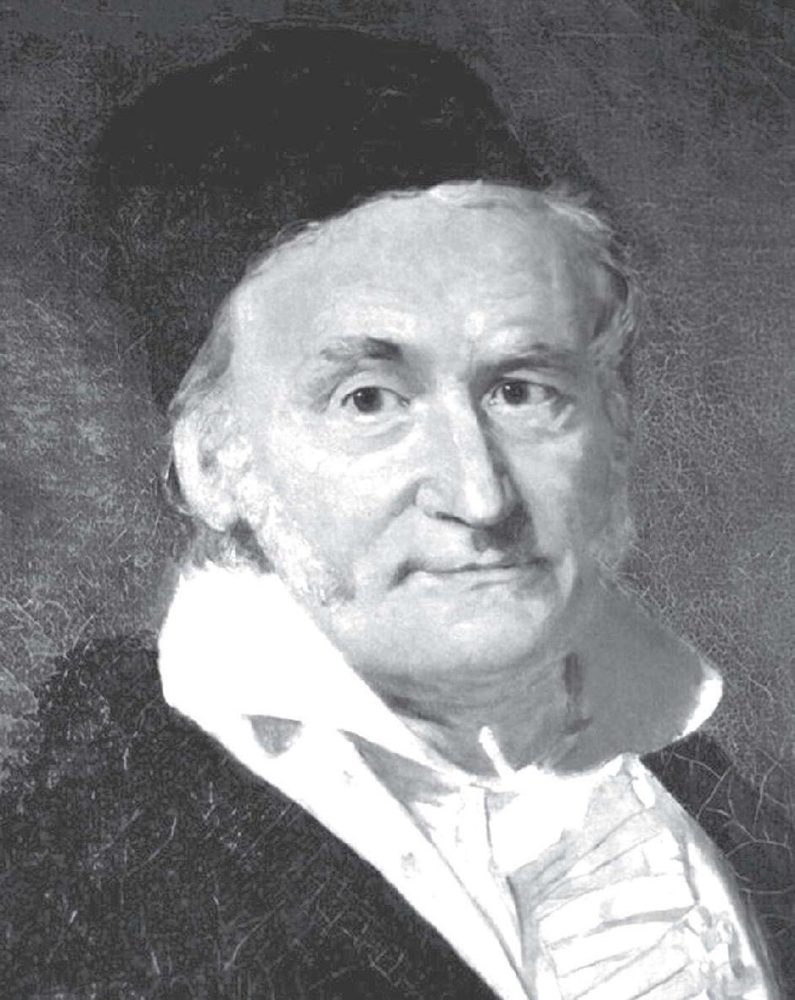

正如从古典艺术到现代艺术的演变以诗歌为先导，科学革命的最早动力来源于数学，尤以几何学的变革为标志。它们的共同特点是，从模仿到机智，从形象到抽象。它们之所以能在同一个时段到达这一境界，我们相信这与现实世界的发展和人类思维方式的改变和进化有关。无论如何，其困难程度可想而知。以非欧几何学为例，它的出现与哥白尼的日心说、牛顿的万有引力定律、达尔文（C.Darwin，1809—1882）的进化论一样，遇到了重重阻力，并因此在科学、哲学、宗教等领域产生了革命性的影响。
自从亚里士多德以来，在文学艺术以模仿说为准则的同时，科学尤其是数学也一直被视作绝对真理的典范。古典数学在西方思想中拥有与宗教一样神圣不可侵犯的地位，欧几里得是庙堂中职位最高的“神父”。1804年去世的德国哲学家康德正是在欧几里得几何毋庸置疑的真理观之上，建立起深奥难懂的哲学体系。可是，到了1830年前后，一向被视为关于数量关系和空间形式的真理的数学，却突然出现了几种相互矛盾的几何学，而且这些不同的几何学似乎都是正确的。
事实上，几千年来，非欧几何一直在人们的眼皮子底下（现代主义诗人笔下的素材也早已存在）。但是，即使最伟大的数学家也没有想到通过检验球的几何特性去推翻平行公设。他们中的个别人曾经尝试通过四边形来证实平行公设，而人类却一直生活在一个堪称非欧几何模型的地球表面之上。这一点表明，人们是多么容易受惯性思维和传统习俗的束缚。难怪功成名就的高斯迟迟不肯把他发现的非欧几何学公之于众，他怕惹来不必要的麻烦，以至于让两位俄罗斯和匈牙利的年轻人抢得先机。

“数学王子”高斯
然而，欧几里得几何最终交出了它的绝对统治权，这意味着绝对真理统治时代的终结，正如爱伦·坡和波德莱尔的出现结束了浪漫派诗人的绝对统治一样。但是，数学在丧失绝对真理和权威的同时，也获得了自由发展的机遇。正如G.康托尔所说：“数学的本质就在于它的充分自由。1830年以前，数学家的处境可以比作一位非常热爱纯艺术，却又不得不接受为杂志绘制封面的艺术家。”无疑，非欧几何学正是推动这种变革的首要因素，而它本身就是人类所能创造出来的最高智慧结晶。非欧几何学的诞生和代数学的革命，与微积分学产生的原因并不一致，不是出于科学和社会经济发展的需要，而是出于数学内部发展的需要。
一般来说，在我们的日常生活中，欧几里得几何更适用；在宇宙空间或原子核世界，罗巴切夫斯基几何更符合客观实际；在地球表面研究航海、航空等实际问题，黎曼几何更准确一些。不过，空间和物理之间总存在难以厘清的关系，要确定某些物理空间适用欧几里得几何还是非欧几何并不容易。因为只要在假定的空间和物理性质方面做适当的补充和改变，一个观察结果就可以用多种方法解释。尽管如此，随着非欧几何学的诞生和代数学的解放，数学已从科学中分离出来，正如科学已从哲学中分离出来，哲学已从神学中分离出来。数学家可以探索任何可能的问题和体系，而当新的数学创造逐渐完善之后，它必将做出反馈，指点人类描绘宇宙的蓝图。下一章我们将会看到，爱因斯坦的广义相对论便是在应用了非欧几何学以后产生的。
最后我想谈一则趣闻，早在1830年，即罗巴切夫斯基在遥远的喀山用俄文发表他的新几何学的第二年，剑桥大学的英国数学家皮科克（G.Peacock，1791—1858）发表了《代数通论》（Treatise Algebra），试图对代数做堪与欧几里得《几何原本》相媲美的逻辑处理。他发现了代数运算的5项基本法则，即加法、乘法的交换律，加法、乘法的结合律，乘法对加法的分配律，这5条性质构成了以正整数为代表的特殊类型的代数结构的公设。可是，正当皮科克的后继者准备把公设的概念推广成为代数学的现代概念时，哈密尔顿和格拉斯曼发表了意义深远的四元数理论，宣告皮科克和他的追随者的努力失败。皮科克也于1939年离开剑桥大学，出任伊利教区的主教。